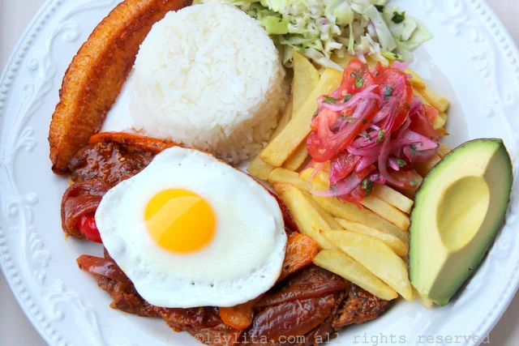

Ingredientes
2 libras de filetes o bistecs de carne de res
8-12 dientes de ajo machacados
1 cucharada de comino molido
Sal y pimienta al gusto
Para acompañar:
Arroz
Huevos fritos
Papas fritas
Plátanos maduros fritos
Curtido de cebolla y tomate con lechuga y aguacate
Ají criollo
Preparación
Mezcle el ajo machacado con el comino, la sal y la pimienta para preparar un aliño para la carne
Frote los filetes de carne con el aliño y déjelos reposar por un par de horas
Cocine los filetes a la parrilla o en una sartén, áselos o fríalos en cada lado hasta que estén cocidos a su gusto, dependiendo de la temperatura de su parrilla esto tomara solamente unos minutos.
Sírvalos con un huevo frito encima de cada bistec y acompañados de arroz, papas fritas, platanos maduros fritos, curtido de cebolla y tomate, lechuga, rodajas de aguacate y aji al gusto.